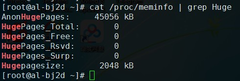
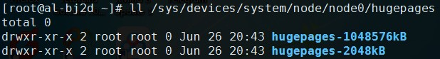
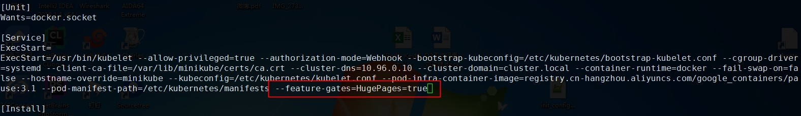
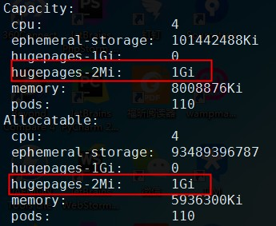
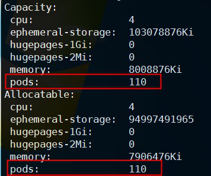
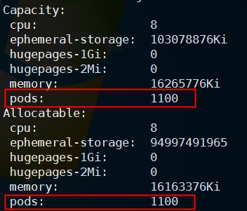
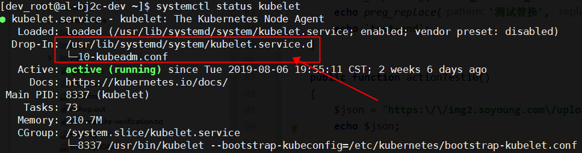
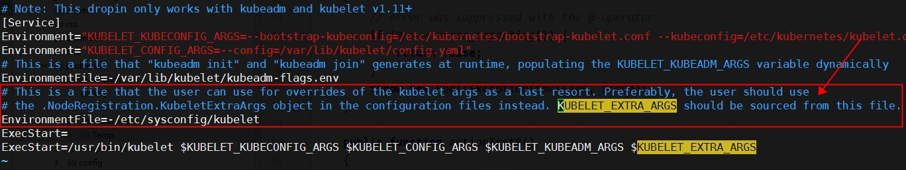
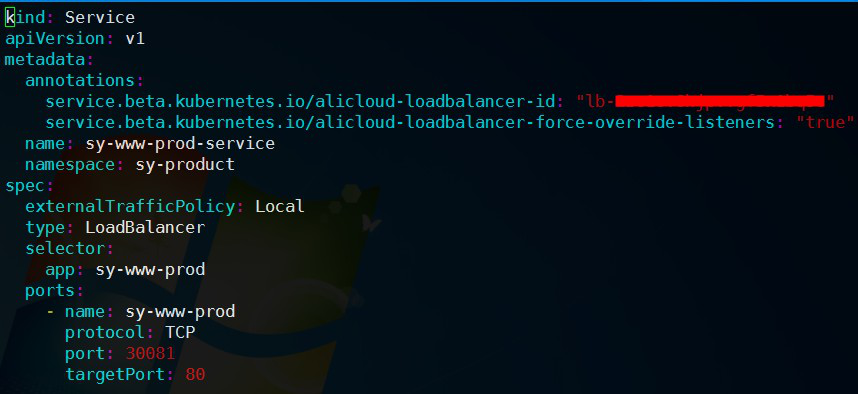

基础环境：
- PHP 7.2.7
- Docker 18.09.2
- Kubernetes 1.12
PHP 开启 huge_code_pages 报错解决方式
PHP 开启 opcache.huge_code_pages=1 后，运行时报错：Zend OPcache huge_code_pages: mmap(HUGETLB) failed: Cannot allocate memory (12)
问题原因
系统 Hugepage 不足，CentOS 系统中 Hugepage 是没有默认开启的，可以通过下面命令查看，可见 HugePages_Total 是 0
1 | cat /proc/meminfo | grep Huge |

解决步骤
(1) 开启宿主机 Hugepage
/etc/sysctl.conf 添加配置 vm.nr_hugepages = 512，保存退出，执行 sysctl -p 使配置生效，再次执行 cat /proc/meminfo | grep Huge 查看已分配 HugePages_Total 为 512。
如果查看结果与设置数值相差较大，则可能为系统已经无法分配出连续的这些内存，重启服务器后再重复操作即可。
注意上图 Hugepagesize 是 2048KB，也就是单个 Hugepage 是 2M，分配 512 个 Hugepage，所以总共分配的内存是 1G。
补充说明：单个 Hugepage 有 2048kB 和 1048576kB 两种，执行 ls /sys/devices/system/node/node0/hugepages，可见：

(2) 为 nodes 分配 Hugepage
可参考 Kubernetes 官方文档“管理巨页”一节。首先 Kubernetes 节点宿主机必须预先分配巨页，这在上一步已经完成。
需要将开关 HugePages 设置为 true：--feature-gates=HugePages=true
在 master 和 node 各个节点上都修改 /etc/systemd/system/kubelet.service.d/10-kubeadm.conf 文件，增加启动参数 --feature-gates=HugePages=true 。如图所示：

修改后需要重启kubelet使参数生效：
systemctl daemon-reload
systemctl restart kubelet
此时在 master 执行 kubectl describe nodes，hugepages-2Mi 配置已经由 0 变为 1Gi：

(3) 在 Deployment中使用 hugepages
如果不进行该步骤直接部署容器会导致执行 PHP 任何命令均报错 Bus error (core dumped)
参考 Kubernetes 官方文档 “管理巨页” 中的 yaml 文件示例。
按照官方示例 yaml，添加 spec.containers.volumeMounts、spec.containers.resources、spec.volumes 即可，虽然官方是 Pod 的 yaml 做示例，但 Deployment、DaemonSet 修改方式都相同。
(4) 部署完成
部署完成后进入 Docker，执行 php -i | grep -i huge 检查 huge_code_pages 确实已经开启，且命令运行正常，问题解决。
(5) 巨页分配注意事项
其中 memory: 1024Mi 的数值要按照第一步分配的内存确定，512 * 2048KB = 1024M
需注意，一方面对于 PHP-FPM 应用，分配内存不宜过小。实测当分配 100M 但 FPM 启动多达 200 个进程时会由于内存不足频繁报错 child exited on signal 9 (SIGKILL) after xxx seconds from start。
另一方面，所有需要使用 hugepage 的应用 分配并独占 宿主机相应大小的 hugepage 空间，如果一个 Deployment 已分配了全部的 1024M 内存，另一个也需要 hugepage 的 Deployment 会处于 Pending 状态而不会启动成功。
参考资料
- https://juejin.im/entry/5bd9d4786fb9a0228b409420
- https://v1-14.docs.kubernetes.io/docs/tasks/manage-hugepages/scheduling-hugepages/
- https://kubernetes.io/zh/docs/tasks/manage-hugepages/scheduling-hugepages/
- https://kubernetes.io/docs/reference/command-line-tools-reference/feature-gates/
PHP 上传文件报错
PHP Web 服务容器化部署后，上传文件报错：file_get_contents(): Filename cannot be empty
根据 php.ini 中 upload_tmp_dir = /tmp/php7temp 配置，检查容器中 /tmp/php7temp 目录是否存在、PHP-FPM 用户是否可写，若不存在可通过 K8S 的 emptyDir 挂载：
1 | containers: |
参考 Kubernetes 官方文档 “volumes” 一节 emptyDir 的示例。
采用K8S部署后配置、代码自动更新
应用配置、Nginx 配置、PHP-FPM 配置均是采用 ConfigMap 指定 subPath 的方式挂载到容器，一般环境变量或是 subPath 方式设置的配置不能自动更新。
滚动更新思路：Deployment 等 yaml 文件 template 字段下的内容发生变化时可以触发滚动更新，所以增加在 annotations 字段下增加配置版本信息即可，配置变更时由配置管理系统或是 githook 触发，自动更新生成新 yaml 并通过 kubectl apply -f 命令滚动更新。
1 | spec: |
同理可以实现代码版本变化自动滚动更新，只需通过 githook 每次提交代码时把 commit_id 或其他代码版本标识放入 yaml 文件即可。
参考他人文章：ConfigMap的热更新
指定容器内进程启动用户
默认容器内进程以 root 用户启动，为避免安全风险等目的，可以使用非 root 用户启动。
1 | spec: |
其中 runAsUser 为执行用户的 UID，该 UID 必须预先存在于镜像中，如 498 为本人镜像中 nginx 用户 UID。
privileged 配置禁止从容器内访问宿主机任何设备（默认配置），allowPrivilegeEscalation 配置禁止子进程获取比主进程更高的权限。
根据官方文档的 yaml 文件，如果不希望使用 root 用户启动，推荐配置 privileged 和 allowPrivilegeEscalation 都为 false。
参考 Kubernetes 官方文档 “Pod 安全策略” 一节中的示例。
Node 节点服务器启动时，NAS 盘挂载晚于 Pods 创建
K8S 集群新节点服务器启动时，NAS盘在 /etc/rc.local 中通过 mount 命令挂载，在未完成挂载时 Pods 已经创建，导致 NAS 盘无法挂载进 Pods。
解决方式：非本地盘建议通过 PV/PVC 方式挂载，避免使用 hostPath 方式挂载。
1 | - name: img-dir |
若使用阿里云可以参考：https://help.aliyun.com/document_detail/86784.html
解决 Node 节点上最多 110 个 Pods 的限制
在需要修改的 Node 节点修改 kubelet 配置，vi /etc/sysconfig/kubelet 修改 KUBELET_EXTRA_ARGS=”–max-pods=1100”
修改后重启kubelet使参数生效：
1 | systemctl daemon-reload |
未作修改时 kubectl describe node 查看到的 Pods 数量：
查看修改后的 Pods 数量：
需要注意，此时最大 Pods 数量限制得以放松，但是仍然存在每个 Node 上的 Pods 地址范围限制。
默认每个 Node 的 Pods 地址范围是 C 类地址，如果这些 Pods 需要暴露 IP，那么每个节点仍不能部署超过约 255 个 Pods。
修改 PodCIDR 需要重建集群，具体操作后续将在其他文章中说明。
说明：如何找到 /etc/sysconfig/kubelet 文件的：
(1) 查看 kubelet 状态：systemctl status kubelet
(2) 找到服务加载的配置文件：/usr/lib/systemd/system/kubelet.service.d/10-kubeadm.conf
(3) 在 10-kubeadm.conf 里找到服务启动命令：
ExecStart=/usr/bin/kubelet $KUBELET_KUBECONFIG_ARGS $KUBELET_CONFIG_ARGS $KUBELET_KUBEADM_ARGS $KUBELET_EXTRA_ARGS
结合注释可知，KUBELET_EXTRA_ARGS 参数来自于 /etc/sysconfig/kubelet 文件，并且会覆盖默认启动参数，故在该文件添加 KUBELET_EXTRA_ARGS=”–max-pods=1100” 即可。
Nginx 获取客户端真实 IP
在使用 NodePort 方式暴露的 web 服务的 nginx 日志中，remote_addr 字段无法正确取得来源 IP。
这个IP地址应该是 flannel cni0 的 IP 地址，Loadbalancer 或者 NodePort 在经过主机转发时会 SNAT 成 cni0 的 IP 地址。
通过设置 service.spec.externalTrafficPolicy 字段为 Local 使数据包只转发到本机，则真实来源 IP 地址会被保留，但是这样也失去了优雅重启特性。
可以考虑 Service 采用 Loadbalancer 方式暴露，并在上层接入能够自动监测 Pods 状态的负载均衡器，在 Pods 停止时及时摘除对于节点的服务。

参考：
https://kubernetes.io/zh/docs/tutorials/services/source-ip/